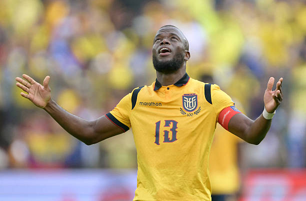

Luca Zidane

Luca Zinedine Zidane ( árabe : لوكا زين الدين زيدان ; nascido em 13 de maio de 1998) é um jogador de futebol profissional que joga como goleiro no Granada, clube da Segunda División . Nascido na França , joga pela seleção da Argélia .
Zidane começou sua carreira no Real Madrid antes de competir profissionalmente na Espanha , principalmente na Segunda Divisão, com Racing Santander , Rayo Vallecano , Eibar e, atualmente, Granada .
Ele representou seu país natal, a França , nas categorias de base do futebol internacional. Tendo se qualificado por meio de seus avós paternos, foi convocado para a seleção principal da Argélia em 2025 e disputou a Copa Africana de Nações de 2025. Ele é filho do técnico e ex-jogador de futebol francês Zinedine Zidane .
Enner Valencia

Enner Valencia construiu uma trajetória sólida desde as categorias de base no Equador até se consolidar como o maior artilheiro histórico de sua seleção em Copas do Mundo. Revelado pelo Emelec, onde se profissionalizou em 2009, o atacante ganhou projeção continental e foi negociado com o Pachuca do México, clube pelo qual rapidamente se destacou como artilheiro e chamou a atenção do futebol europeu. Em 2014, transferiu-se para a Premier League para defender o West Ham e, posteriormente, o Everton. Em seguida, construiu uma passagem de sucesso pelo Tigres UANL no México antes de viver o seu auge goleador no Fenerbahçe da Turquia, onde foi o artilheiro máximo da liga turca. Em 2023, assinou com o Internacional, clube pelo qual foi peça importante na conquista do Campeonato Gaúcho de 2025, antes de concretizar seu retorno ao Pachuca, consolidando-se como um dos maiores atacantes sul-americanos de sua geração.